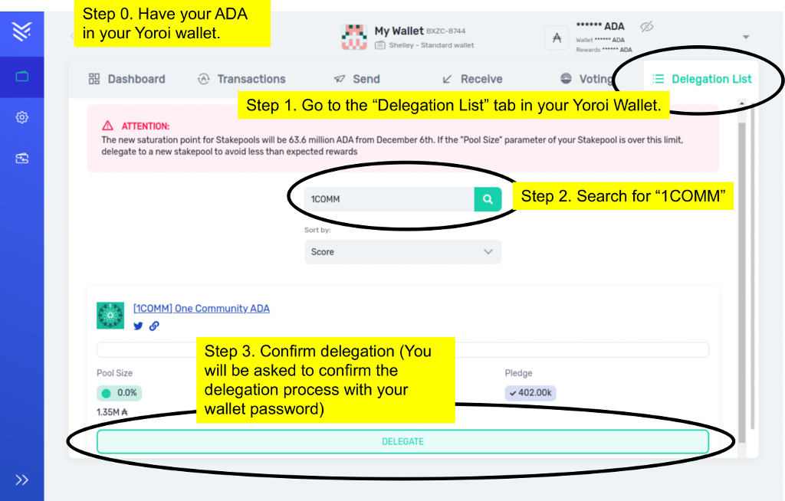

What is Blockchain?
Blockchain is a revolutionary way of storing data, which is in a chain of blocks.
As opposed to traditional storage methods, where all data is persisted in the same database, blockchain works with a distributed ledger that is duplicated and distributed across the entire network of computers. As such, it is extremely difficult or impossible to fraud as past records as consisted among all servers.
The network of computers uses a consensus algorithm to have a common agreement of which are the valid blocks, in order to invalidate malicious data. As such we can say that blockchain is way of managing trust, without trust.
How does Blockchain work?
What is Bitcoin?
Bitcoin (BTC) was created by a person or group named Satoshi Nakamoto in 2009, and is the first established cryptocurrency. It is supported by the Blockchain tecnology, and as such is an electronic way of enabling peer to peer transfer of value, as well as supporting store of value.
In order to write a block in the chain, Bitcoin uses an algorithm called Proof-of-Work (PoW), a consensus mechanism to certify validity of the transactions. This consensus works through a complex eliptical assymetrical equation where the node that finds the key to the equation writes the next block. It is important to mention, however, that the block is not written straight away - The remaining nodes have to validate the block to assure there are not malicious activities trying to execute a double spending of the BTC.
Due to Bitcoin's electronic nature and they way it is structured, BTC is fungible, easily divisible, easily transported and is durable, making it capable of supporting store of value, and having properties that could be considered a modern "digital gold".
What is Cardano?
Cardano (ADA) is a unique cryptocurrency project founded in 2015 by Charles Hoskinson (who is also a cofounder of Ethereum), that is based on sound principles rooted in science and engineering. Its application goes beyond financial systems, implementing a blockchain that covers a wider variety of applications.
 Cardano is known as 3rd generation blockchain. The 1st generation is Bitcoin, that uses the Proof-of-Work (PoW) consensus algorithm. Ethereum forms the basis for the 2nd generation, which adds the implementation of Smart Contracts, allowing programming functions to the blockchain. The 3rd generation is focused on scalability.
Cardano is known as 3rd generation blockchain. The 1st generation is Bitcoin, that uses the Proof-of-Work (PoW) consensus algorithm. Ethereum forms the basis for the 2nd generation, which adds the implementation of Smart Contracts, allowing programming functions to the blockchain. The 3rd generation is focused on scalability.
Cardano is being structured with 3 principles:
Scalability (scaling up the transaction speed supported by the network);
Interroperability (between different blockchain networks);
Sustainability (decentralized governance for a sustainable long term future of Cardano);
and has a solid foundation with peer reviewed development and 103 research papers on top of this technology!
Every ADA holder also holds a stake in the Cardano network. ADA stored in a wallet can be delegated to a stake pool to earn rewards – to participate in the successful running of the network – or pledged to a stake pool to increase the pool’s likelihood of minting blocks. In time, ADA will also be usable for a variety of applications and services on the Cardano platform.
Cardano's mission is to be a plataform built for a sustainable future, to help people work better together, trust one another, and build global solutions to global problems!
What is 1COMM?
One Community ADA is a provider of Cardano/crypto news & updates on Twitter (@OneCommunityAda), and stake pool (Ticker: 1COMM) running with relays in North America and Europe for redundancy and best network synchronization across the globe!
As mentioned in the "What is Cardano" section, every ADA holder can earn passive income by staking your funds on your wallet. It is a way to help to secure the network and earn from the process!
To delegate your stake to 1COMM, you need to have your ADA in a Cardano Wallet Yoroi (Light weight wallet, for normal users) or Daedalus (Full node wallet, recommended for advanced users), and select One Community ADA through the ticker 1COMM. One Community ADA's stake pool should be listed, with pool ID 75f7b7dec6e4c973407a6a64132961635f405f2c3a9ff31598db01da.

The ilustration above shows the delegation process in the case of the Yoroi Wallet.
Copyright © One Community ADA